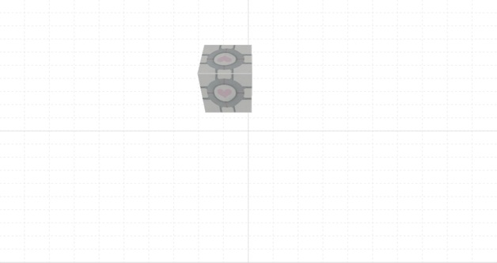

JSRender is my attempt at a custom built sowtware rendering engine. It's built on top of the HTML5 Canvas and it renders a 3D textured and shaded cube on the screen.
You can use the following keys to move the cube:

While at first sight not really impressive, what I found both challenging and fascinating was starting with raw vector and matrix math and using it to project a point, then a line, then a triangle and finally a cube onto the screen.
Once I got that settled, I started dealing with a simple shading model using directional light. You can see it in action in the way different faces light up when rotating or translating the cube.
Another challange was texturing the cube. Now, normally this would be something that OpenGL or DirectX would handle. At first I said I would use Canvas to directly access the 2D pixel matrix and scan-fill the corresponding pixels so that I could texture the cube. In the end I used some Canvas built-in hack-like functionality to achieve the same result. Not the result I was going for, but it looks ok.